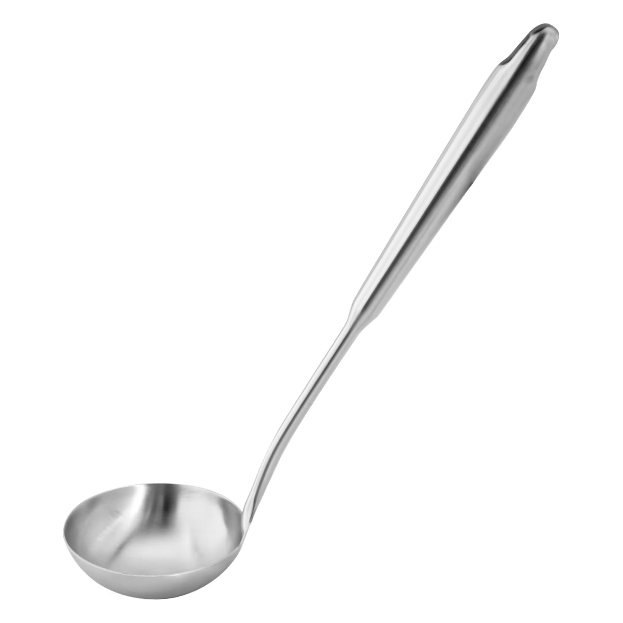

家居与厨房
数字厨房秤 （5公斤/1克, 不锈钢或竹制, USB-C）
最大称量5公斤、精度1克的扁平厨房秤，配大屏LCD和自动关机——小巧轻便，适合作为搭售商品。
厨房秤使用应变片传感器，最大称量5公斤、精度1克，结果显示在大屏LCD上并可自动关机。
技术参数
| 量程/精度 | 5公斤/1克（应变片传感器） |
|---|---|
| 材质 | 不锈钢+ABS |
| 显示 | LCD 54 × 21毫米 |
| 单位 | g、lb:oz、oz、ml可切换 |
| 供电 | USB-C充电版需询价 |
| 功能 | 自动关机、低电量提示 |
| 包装 | 每箱20件 |
| 海关编码（HS） | 84231010 |
欧盟标准与法规
2014/30/EU (EMC)电磁兼容（CE）RoHS 2011/65/EU电气设备有害物质限制ElektroG / BattG / (EU) 2023/1542stiftung ear注册；电池规定（USB-C电池另需UN 38.3）(EC) 1935/2004 / LFGB称重平台的食品接触（不锈钢/竹制）2014/31/EU (NAWID)非自动衡器：仅适用于法定计量用途GPSR (EU) 2023/988产品安全：欧盟责任人、可追溯性
搭配产品
本类别其他产品
空气炸锅用可重复使用硅胶垫 （圆形, 带分隔）可重复使用、可折叠的硅胶垫，替代空气炸锅中的烘焙纸，保持炸篮清洁。
外抽式真空封口机 （约110–120瓦, 干/湿模式）紧凑型真空封口机，适用于袋和卷，带干/湿程序，用于保鲜、备餐和冷冻。
迷你封口机 （可充电, USB-C, 带切刀）便携热封机，适用于薯片和零食袋，带磁吸座——包裹小而轻，适合捆绑和促销。
不锈钢厨房刀具七件套 （配木质刀座）七件套厨房刀具，配木质刀座，不锈钢刀身，适用于家庭厨房。
28厘米铝制煎锅，陶瓷不粘涂层，适用电磁炉轻质铝制煎锅，陶瓷不粘涂层，带电磁炉适用底部。
1.7升不锈钢电热水壶，自动断电与防干烧保护1.7升不锈钢电热水壶，带自动断电与防干烧保护，适用于家庭。
18伏无线手持吸尘器，无刷电机紧凑型无线手持吸尘器，18伏电池，可拆卸尘杯。
钢制可折叠晾衣架，粉末喷涂粉末喷涂钢制可折叠晾衣架，适用于室内晾晒。
搪瓷铸铁炖锅 2.7升搪瓷铸铁炖锅 2.7升，家用常规商品。

不锈钢锯齿面包刀 25厘米不锈钢锯齿面包刀 25厘米，家用常规商品。

电饭煲 1.8升电饭煲 1.8升，家用常规商品。

铝制摩卡壶 300毫升铝制摩卡壶 300毫升，家用常规商品。
竹制抽屉收纳盘竹制抽屉收纳盘，家用常规商品。
304不锈钢分格便当盒304不锈钢分格便当盒，家用常规商品。

金属台面调料架 双层金属台面调料架 双层，家用常规商品。

304不锈钢汤勺304不锈钢汤勺，家用常规商品。